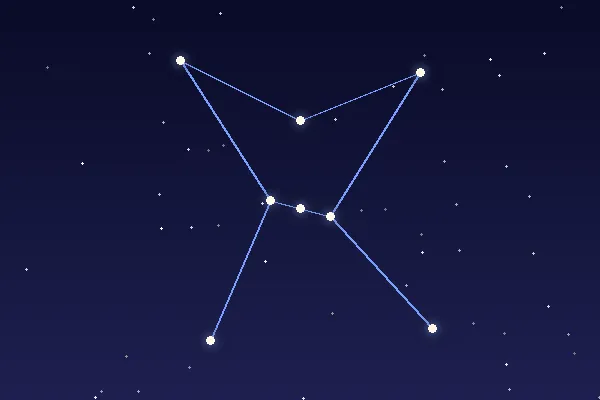

Orión y el escorpión
Orión era un cazador gigante que presumía de poder cazar a cualquier animal de la Tierra. Para darle una lección, la diosa Gea envió un pequeño escorpión que acabó con él. Los dioses pusieron a los dos en el cielo, pero en lados opuestos: por eso, cuando Escorpio sale por el horizonte en verano, Orión ya se ha escondido.